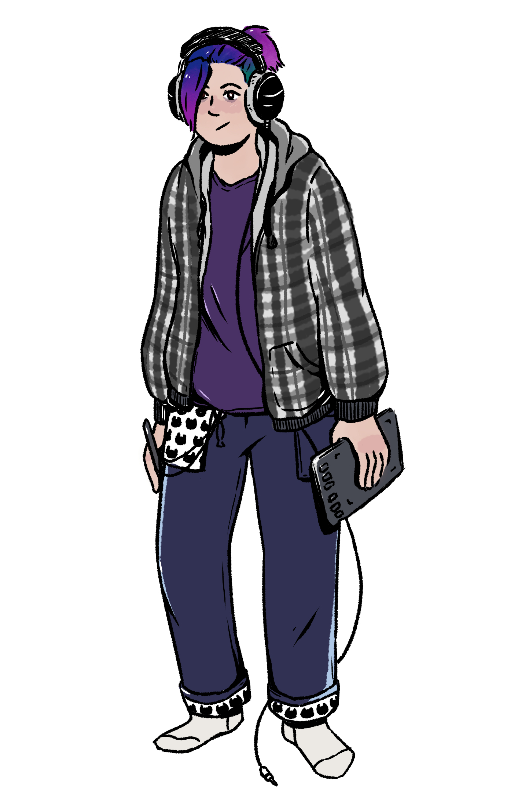

Programmer

C#
C++
Unreal Engine
Unity
Clip Studio Paint
Hi, I'm Julia Ihrenberger, and I've been working on my programming skills since around 2021.
My specialty lies in game engineering and game development, but I have been branching out and have found interest in software development, as well as machine learning and data science while studying my master's degree.
Here is a short selection of my best game projects that I have either produced (Trash Can Be Home) or worked as the tech lead for (Save Our Sun) with my first project winning the GamesPreis award 2023. Feel free to take a look at the game trailers by clicking on a project on the right!
These projects were part of my bachelor's degree, counting
six projects in total, and were developed
within a timeframe of six weeks from concept to final product.
I rapidly developed my team soft skills during this time, such as consistent and reliable consistent and reliable communication, team work as well as learning to lead and be part of small teams with various levels of responsibility. My internship at Aesir Interactive has then allowed me to consolidate those skills on a larger scale and within bigger teams.